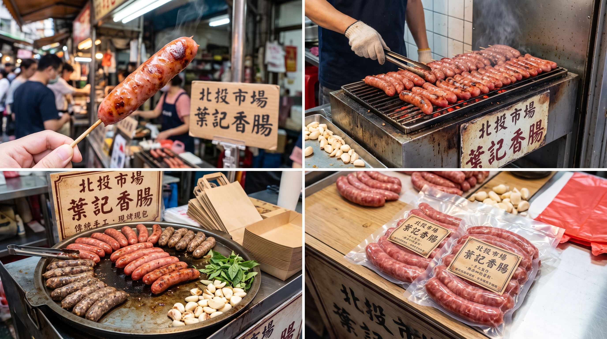

一口葉記香腸，品味北投好時光。
堅持採用 100% 台灣新鮮溫體豬後腿肉，以 3:7 黃金肥瘦比例 手工灌入天然薄脆豬小腸衣。炭火慢烤逼出滾燙肉汁，絕不加防腐劑與人工增稠澱粉，每一口都是真材實料爆汁感動。
⚡ 雙北支援超商冷凍店到店（運費只要 $99） • 今日現灌數量有限，售完為止
天然薄脆豬小腸衣 ｜ 喀滋咬勁 ｜ 汁水豐沛
⚡ 今日北投門市新鮮灌製：限額 100 台斤
免解凍直接下鍋！點擊切換器具，查看零失敗黃金料理火候
每一張照片，都是我們每天清晨在北投市場真實灌製與炭烤的見證。無化學修飾，只有純粹肉質與傳統火候。

核心產品・實品特寫 3:7 溫體豬後腿肉 ｜ 爆汁切面每包半斤（300g ± 10%，約 5~6 根）｜ 每台斤 400 元
特選台灣新鮮溫體豬後腿肉，手工分切保留纖維彈性，搭配天然豬小腸衣，咬感爽脆不乾澀。以金門 58 度高粱酒微醺醃製，氣炸或煎烤後熱油肉汁自然湧出，無防腐劑急速冷凍保鮮。
實體攤位：台北市北投公有市場 ｜ 每日晨間手工現灌
走進北投市場，很難不被飄散在巷弄間的炭烤香氣吸引。葉記香腸傳承家族古法秘方，堅持用時間換取美味。我們不走量販工廠的化學填充路線，老老實實用溫體肉、天然腸衣和木炭高溫，守住老北投人記憶深處最溫暖的味道。
🏮 品牌承諾（Brand Promise）：
「給家人吃的，絕不妥協。」我們用每一根飽滿多汁的香腸，陪伴全台灣無數家庭的餐桌好時光。
前 3 秒炭火視覺爆擊，中間完美切面垂涎欲滴，最後留下在地溫暖品牌印象。請點擊播放，感受最真實的炭香體感！
0~3 秒
炭火肉汁沸騰
【老靈魂】
4~7 秒
切開爆汁蒸氣
【真香氣】
8~10 秒
職人微笑遞上
【好時光】
拉動下方斤數滑桿，系統即時試算梯級折扣、免運優惠與開團贈品
感謝您品嚐北投市場葉記香腸！請花費 2~3 分鐘勾選真實感受，填妥即可立即獲取「50 元回購專屬折價券」！
已挑選商品：0 包
結帳總計：NT$ 0